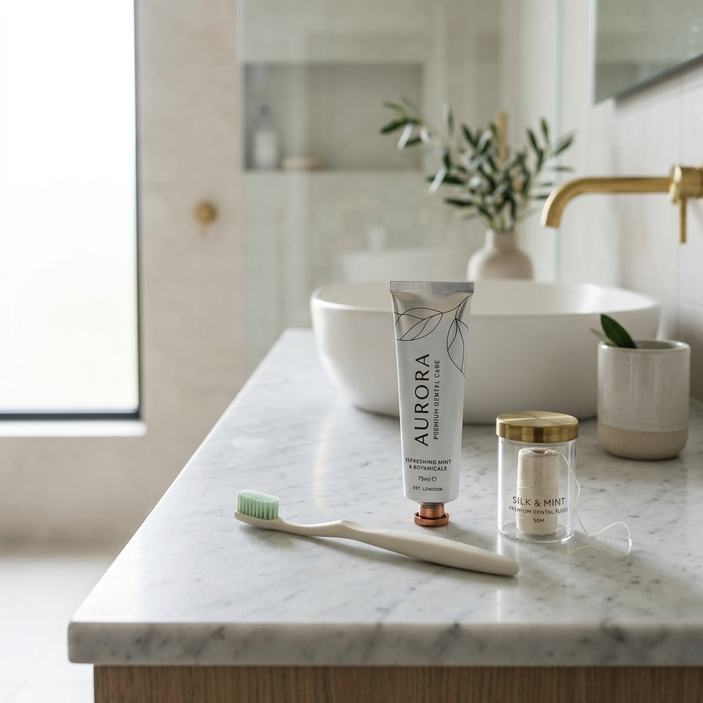
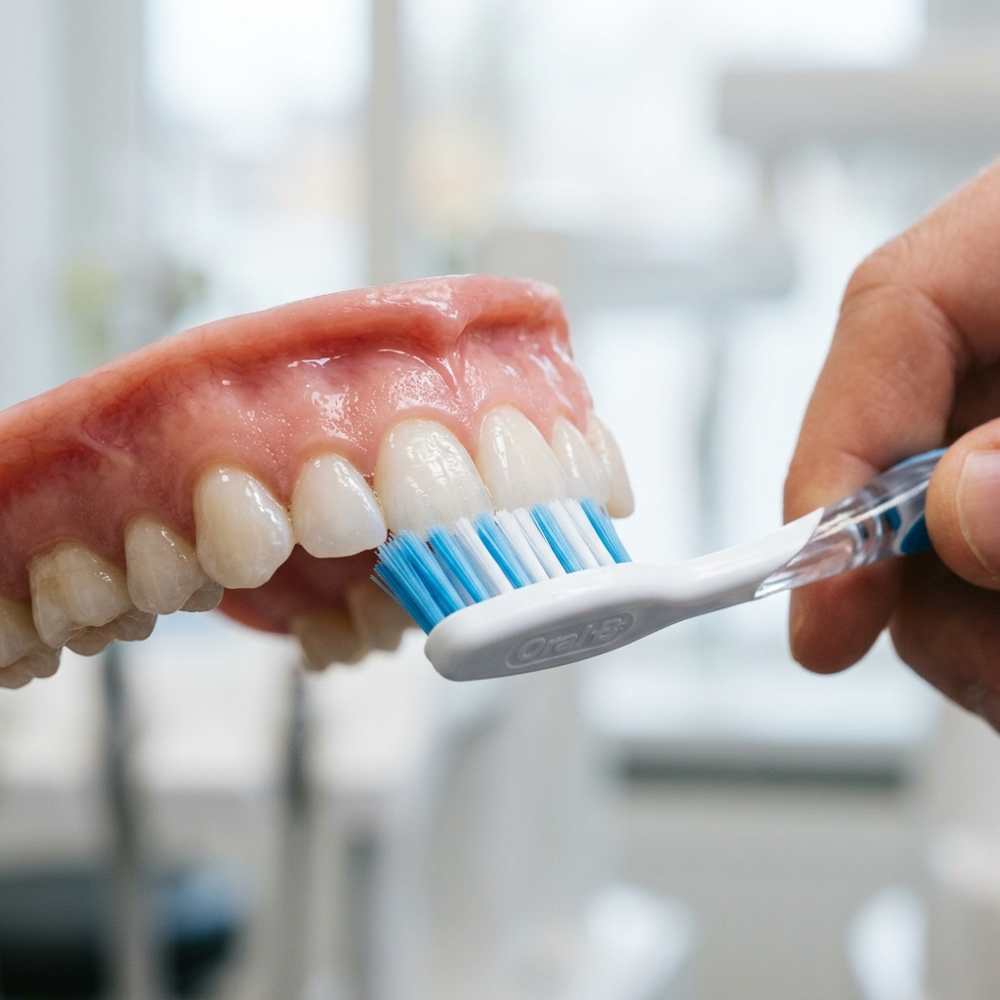
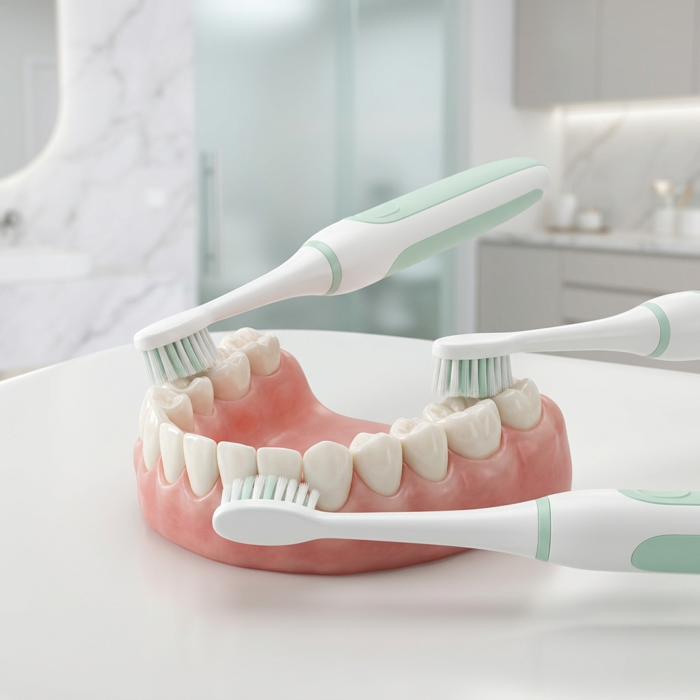
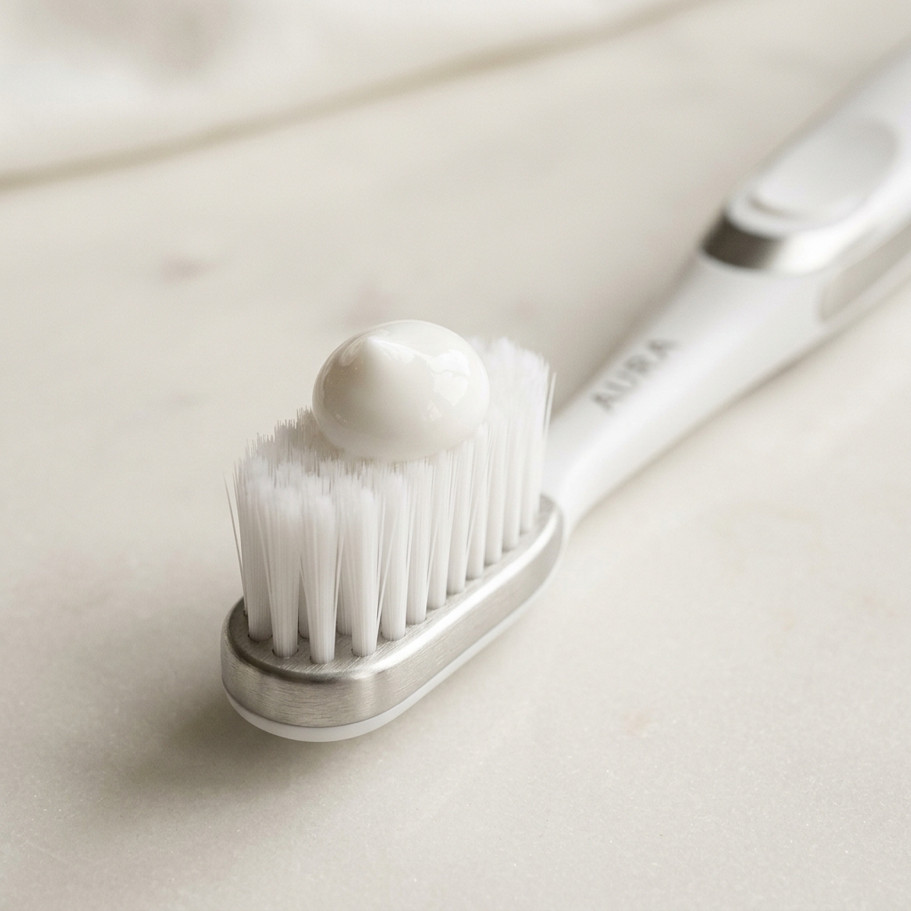
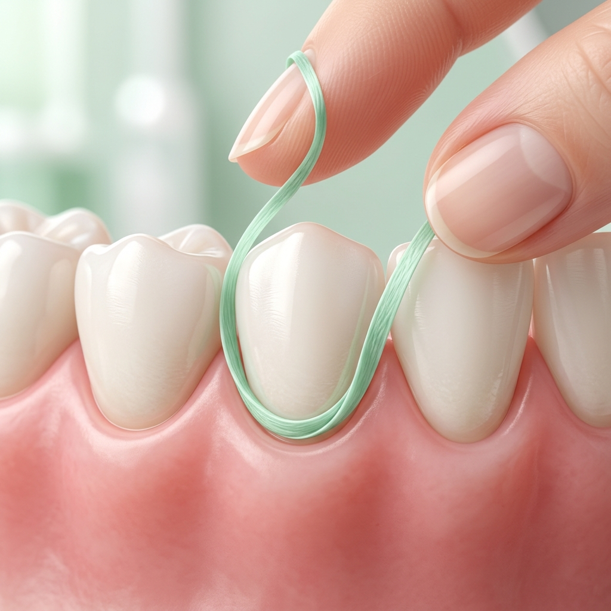

Здорові зуби починаються не з крісла стоматолога, а з ванної кімнати. За даними ВООЗ, понад 90% дорослих хоча б раз у житті стикалися з карієсом, і у переважній більшості випадків причина одна — недостатня або неправильна щоденна гігієна. Добра новина в тому, що рутина домашнього догляду займає всього 5–7 хвилин на день, і саме вона визначає, чи муситимуть стоматологи лікувати ваші зуби, чи просто фіксуватимуть, що все добре.
У цьому матеріалі ми зібрали 10 ключових правил домашнього догляду за зубами — від правильної техніки чищення до вибору пасти й ополіскувача. Поради базуються на рекомендаціях Європейської федерації пародонтології (EFP), Американської стоматологічної асоціації (ADA) та клінічному досвіді лікарів Harmony Clinic в Одесі. Якщо ж вас цікавить процедура у клініці, ми окремо розповіли про неї у статті «Професійне чищення зубів: Air Flow, ультразвук, полірування».
Зміст статті
- Чистити зуби двічі на день по 2 хвилини
- Правильна техніка: метод Басса
- Як обрати зубну щітку
- Як обрати зубну пасту
- Замінювати щітку кожні 3 місяці
- Користуватися флосом щодня
- Ополіскувач — допоміжний крок
- Чистити язик
- Слідкувати за раціоном
- Контрольний візит раз на півроку
- Топ-7 помилок домашнього догляду
- Особливості для дітей, підлітків і людей похилого віку
- Часті запитання (FAQ)
1. Чистіть зуби двічі на день по дві хвилини
Це аксіома, але деталі важливі. Перше чищення — після сніданку (а не до нього), щоб видалити залишки їжі та плівку, що утворилась за ніч разом з остатками сніданку. Друге — ввечері, безпосередньо перед сном, після останнього прийому їжі чи напоїв. Уночі вечірнє чищення — найвідповідальніше: вночі секреція слини знижується у 4–6 разів, а отже захист емалі мінімальний. Бактерії в цей час найактивніші.
Тривалість — рівно 2 хвилини. Дослідження показують, що люди суб'єктивно «відчищають» зуби за 45 секунд, тоді як насправді щітка ефективно знімає наліт лише після ~90 секунд контакту з поверхнею. Якщо у вашій щітці немає таймера, увімкніть на телефоні 2-хвилинний таймер або поставте улюблену пісню — мозок звикне, і ви перестанете «обманювати» себе.

2. Використовуйте техніку Басса — і нічого не «пиляйте»
Найпоширеніша й найдоказовіша техніка — метод Басса (Bass technique). Її суть: щітку тримають під кутом 45 градусів до лінії ясен так, щоб кінчики щетинок заходили в зубоясенну борозну — саме там накопичується найшкідливіший бактеріальний наліт. Замість горизонтального «пиляння» робіть короткі вібраційні або виметальні рухи від ясен до жувального краю.
Сильний тиск не покращує очищення — навпаки. Емаль і ясна не люблять натиску понад 150–200 грамів (вага мандарина). Якщо чути «скрипіння» або щетинки розплющуються, значить ви тиснете надто сильно. Деякі електричні щітки мають сенсор тиску, який блимає червоним — це дуже корисна функція.

Чистіть три поверхні кожного зуба: зовнішню, внутрішню та жувальну. Внутрішню (з боку язика) забувають найчастіше — саме там у нижніх передніх зубах швидше за все утворюється зубний камінь.

3. Як обрати зубну щітку
Базове правило: м'яка щетина (soft) — для більшості людей. Жорстка щетина (hard) травмує емаль і провокує рецесію ясен — оголення шийки зуба, що згодом призводить до підвищеної чутливості і необхідності реставрацій. Середня (medium) допускається лише у пацієнтів зі схильністю до швидкого утворення зубного каменю — і лише за рекомендацією лікаря.

Звичайна чи електрична?
Кокранівський мета-аналіз 56 досліджень показав: електричні щітки з осциляторно-ротаційною головкою видаляють на 11–21% більше нальоту, ніж звичайні. Однак це не означає, що звичайна щітка погана. Найважливіша — техніка, а не пристрій. Якщо ви впевнено володієте методом Басса, звичайна щітка soft дасть чудовий результат.
Електрична щітка особливо корисна:
- дітям, які ще не освоїли техніку;
- людям із обмеженою рухливістю рук (артрит, постінсультний період);
- пацієнтам із брекет-системами та імплантами;
- тим, хто стабільно «обходить» певні зони рота.
4. Як обрати зубну пасту
Головний критерій — концентрація фтору. Фтор зміцнює емаль, перетворюючи її на більш стійкий до кислот фторапатит, і навіть може зупиняти ранній карієс на стадії білої плями. Запам'ятайте цифри:
| Вік | Концентрація фтору | Кількість пасти |
|---|---|---|
| 0–3 роки | 1000 ppm | Мазок з рисове зерно |
| 3–6 років | 1000 ppm | Горошина |
| 6–14 років | 1350–1500 ppm | Горошина |
| Дорослі | 1450–1500 ppm | 1.5–2 см |
| Пацієнти з високим ризиком карієсу | 2800–5000 ppm (за призначенням) | 1.5–2 см |
Інші компоненти оцінюйте за показаннями. Гідроксиапатит — гарна альтернатива фтору для людей з підвищеною чутливістю та для дітей у регіонах із фторованою водою. Нітрат калію або аргінін — знижують чутливість зубів. Цинк — допомагає в боротьбі з галітозом (неприємним запахом). Натомість пасти з SLS (лаурилсульфатом натрію) і високоабразивні «відбілюючі» формули краще обмежити курсами.
Не знаєте, яка паста підійде саме вам? Стоматолог підбере оптимальну формулу за станом емалі та ясен — безкоштовно під час огляду.
Зателефонувати5. Змінюйте зубну щітку кожні 3 місяці
Щетинки втрачають пружність, розплющуються і перестають ефективно знімати наліт уже через 10–12 тижнів. На старій щітці накопичуються бактерії, грибки і навіть мікрочастинки засохлої пасти. Замінити її потрібно раніше у двох випадках: якщо щетина видимо розпушилася або після перенесеного ГРВІ, ангіни, грипу — щоб уникнути повторного інфікування. Це правило стосується і змінних насадок електричних щіток.
6. Користуйтеся флосом щодня — і робіть це правильно
Зубна щітка обробляє лише 60–65% поверхні зубів. Контактні (бокові) поверхні залишаються недоторканими — і саме там народжується міжзубний карієс, який пацієнт довго не помічає, поки не з'являється біль. Без флосу або міжзубних йоржиків зробити повноцінну домашню гігієну неможливо.

Як користуватися ниткою:
- Відірвіть приблизно 40 см флосу і намотайте на середні пальці обох рук.
- Заведіть нитку між зубами акуратно, без різких рухів, щоб не травмувати міжзубний сосочок.
- Огиньте нитку навколо зуба у формі літери C і протягніть знизу вгору 2–3 рази. Повторіть для сусіднього зуба.
- Використовуйте чисту ділянку нитки для кожного наступного проміжку.
Якщо проміжки широкі, флос може провалюватися — у такому разі краще обрати міжзубні йоржики (interdental brushes) потрібного діаметру. Іригатор не замінює флос, але добре доповнює його, особливо для пацієнтів із ортопедичними конструкціями та мостоподібними протезами.
7. Ополіскувач — корисний, але не обов'язковий
Ополіскувачі поділяються на дві категорії:
- Гігієнічні (косметичні) — на основі ефірних олій, фтору або гідроксиапатиту. Освіжають дихання і дозованно зміцнюють емаль. Підходять для щоденного використання.
- Лікувальні — на основі хлоргексидину, цетилпіридинію хлориду чи інших антисептиків. Використовуються курсами 7–14 днів за рекомендацією стоматолога — наприклад, після видалення зуба чи при загостренні гінгівіту. Тривале безконтрольне користування порушує мікробіом порожнини рота і може фарбувати емаль.
Ополіскуйте рот не одразу після пасти, а через 30 хвилин — щоб не змивати фтор. Або обирайте ополіскувач без спирту з фтором і використовуйте його замість водного полоскання.
8. Не забувайте про язик
На язиці живе до 50% усіх бактерій порожнини рота. Саме білуватий або жовтуватий наліт на язиці у 80–90% випадків є причиною неприємного запаху з рота (галітозу). Достатньо спеціального скребка для язика або щіточки на тильному боці головки зубної щітки.
Як чистити: висуньте язик, проведіть скребком від кореня до кінчика 5–7 разів, обполіскуючи його під водою після кожного проходу. На це йде не більше 30 секунд — а ефект помітний відразу.
9. Слідкуйте за раціоном і питним режимом
Цукор — основне «паливо» бактерій. Бактерії Streptococcus mutans переробляють вуглеводи на молочну кислоту, яка демінералізує емаль. При цьому шкідливо не стільки скільки цукру ви з'їсте, скільки як часто. Один кекс із кавою за один присіст — менш ризиковано, ніж той самий кекс, розтягнутий на 5 перекусів протягом дня.
Що варто обмежити:
- Газовані солодкі напої — поєднують цукор і кислоту, найшкідливіша комбінація для емалі.
- Цитрусові соки і вино — кислотний pH розчиняє мінерали.
- Липкі солодощі (іриски, жувальні цукерки) — довго утримуються на зубах.
- Часте «перехоплювання» снеками протягом дня — провокує тривалу кислотну атаку.
І важливе правило: після кислої їжі чекайте 30 хвилин перед чищенням. Кислота тимчасово розм'якшує емаль — і щітка в цей момент її просто «зчищає». Краще прополощіть рот водою або з'їжте шматочок твердого сиру.
Вода — найкращий природний захисник зубів. Достатнє споживання (1.5–2 літри на день) стимулює вироблення слини, а слина нейтралізує кислоти, доставляє кальцій і фосфор до емалі та механічно змиває залишки їжі. Сухість у роті (ксеростомія) у 3–5 разів збільшує ризик карієсу.
10. Контрольний візит до стоматолога раз на 6 місяців
Навіть бездоганна домашня гігієна не замінює професійного контролю. На профілактичному огляді лікар:
- знаходить ранній карієс на стадії білої плями — коли його ще можна зупинити без бору;
- оцінює стан ясен і пародонту;
- видаляє зубний камінь, який вдома прибрати неможливо (про це детально — у статті про професійну гігієну);
- робить ремінералізацію або герметизацію фісур за показаннями;
- відстежує зношування реставрацій, коронок, імплантів.
Для пацієнтів із пародонтитом, цукровим діабетом, тих, хто курить, носить брекети чи має імпланти — інтервал може бути коротшим: 3–4 місяці.
Топ-7 типових помилок домашнього догляду
Найчастіші помилки, які бачать стоматологи
- Чищення горизонтальним «пилянням» — стирає емаль у пришийковій ділянці.
- Сильний натиск — провокує оголення шийок зубів і чутливість.
- Чищення відразу після кислої їжі чи напоїв — «зчищає» розм'якшену емаль.
- Прополіскування рота водою після чищення — змиває фтор з пасти.
- Користування жорсткою щіткою «щоб краще чистило» — насправді травмує.
- Ігнорування язика і внутрішніх поверхонь зубів.
- Заміна щітки раз на рік (а то й рідше) — стара щетина просто розмазує наліт.
Особливості догляду в різному віці
Діти до 6 років
Чистіть зуби разом із дитиною — батьки контролюють процес мінімум до 7 років. Використовуйте дитячу щітку з маленькою голівкою і пасту з фтором 1000 ppm у мазку розміром із рисове зерно (до 3 років) або горошину (3–6 років). Перший візит до стоматолога — у віці прорізування першого зубчика, потім кожні 3–6 місяців.
Підлітки з брекетами
Брекет-система різко збільшує ризик карієсу та білих плям на емалі. Обов'язкові: ортодонтична щітка V-подібної форми, монопучкова щітка для очищення біля брекета, флос-нитка з протягувачем або суперфлос, іригатор. Якщо вибираєте між брекетами й елайнерами, прочитайте нашу статтю «Брекети чи елайнери: що обрати».
Дорослі і люди похилого віку
З віком ясна природно опускаються, і оголюються шийки зубів — найбільш чутливі ділянки. Обирайте пасту для чутливих зубів, м'яку щітку, не забувайте про міжзубні йоржики. Якщо у вас є коронки, мости чи імпланти — без іригатора повноцінна гігієна неможлива. При сухості в роті (часто буває як побічний ефект ліків) — пийте більше води, використовуйте зволожуючі ополіскувачі без спирту.
Часті запитання (FAQ)
Скільки концентрації фтору має бути в зубній пасті?
Для дорослих — 1350–1500 ppm. Для дітей до 3 років — 1000 ppm із мазком пасти з рисове зерно, для 3–6 років — 1000 ppm горошиною. Концентрація завжди вказана дрібним шрифтом на упаковці. Пасти <1000 ppm для дорослих майже не дають ефекту проти карієсу.
Електрична чи звичайна зубна щітка — що краще?
Електрична на 11–21% ефективніша за наукою, але звичайна soft із правильною технікою працює не гірше. Електрична корисніша дітям, людям з обмеженою моторикою, пацієнтам з брекетами або імплантами. Принципово важливіша техніка, а не пристрій.
Що краще: зубна нитка чи іригатор?
Це не альтернативи, а доповнення. Флос механічно знімає бактеріальну біоплівку з контактних поверхонь — це його не замінить ніщо. Іригатор водним струменем вимиває залишки їжі та масажує ясна. Оптимально: ввечері — флос, після їжі за потреби — іригатор. Для пацієнтів з імплантами, мостами і брекетами іригатор обов'язковий.
Чи потрібно споліскувати рот водою після чищення?
Ні. Виплюньте піну, але не споліскуйте. Фтор продовжує зміцнювати емаль протягом ~30 хвилин після чищення. Активне полоскання водою змиває цей захисний шар і знижує ефективність пасти.
Чи треба чистити зуби після кожного прийому їжі?
Ні, двох разів на день достатньо. Більше — потенційно шкідливо: після кислої їжі емаль розм'якшена, і чищення її стирає. Краще прополощіть рот водою, пожуйте жувальну гумку без цукру або з'їжте шматочок твердого сиру.
Чи можна обійтися без флосу, якщо ретельно чистити зуби щіткою?
Ні. Щітка не дістає до контактних поверхонь — це 30–40% площі зубів. Саме там виникає міжзубний карієс, який довго не помітний. Без флосу або йоржиків ризик карієсу між зубами зростає у 2–3 рази.
Чи допомагає жувальна гумка з ксилітом?
Так, у деяких випадках. Ксиліт пригнічує ріст карієсогенних бактерій S. mutans, а сам процес жування на 10–15 хвилин стимулює слиновиділення, нейтралізуючи кислоти. Це гарне доповнення після їжі поза домом, але не заміна чищення.
Запишіться на профілактичний огляд в Одесі
Стоматолог Harmony Clinic перевірить ефективність вашої домашньої гігієни, підбере щітку, пасту та допоміжні засоби індивідуально під ваші зуби і ясна.
Зателефонувати: +38 068 779 45 47